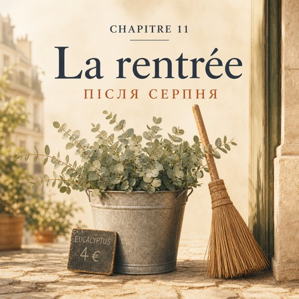

0:00
3:10
Натисніть речення, щоб почути його окремо.
Щоб слухати з підсвіткою — відкрийте сторінку в браузері.
Le mardi 16 septembre — вівторок, 16 вересня
Huit heures et quart. Le rideau de fer monte. Deuxième jour.
Чверть на дев'яту. Залізна ролета повзе вгору. Другий день.
— Bonjour, Nathalie.
— Добрий день, Наталі.
— Bonjour, Solange.
— Добрий день, Соланж.
Aujourd'hui, elle sait où sont les seaux.
Сьогодні вона знає, де стоять відра.
Le matin, au magasin, c'est toujours pareil.
Ранок у магазині завжди однаковий.
D'abord, on sort les seaux sur le trottoir.
Спершу виносимо відра на тротуар.
Ensuite, on change l'eau et on coupe les tiges.
Потім міняємо воду й підрізаємо стебла.
Puis, on balaie devant la porte.
Далі підмітаємо перед дверима.
L'eau froide réveille mieux que le café.
Холодна вода будить краще за каву.
Natalia balaie devant la porte.
Наталя підмітає перед дверима.
Elle dit bonjour au facteur, à la dame du café d'en face, à un monsieur qui passe et qui n'achète rien.
Вона вітається з листоношею, з пані з кав'ярні навпроти, з паном, який проходить повз і нічого не купує.
C'est la règle.
Це правило.
À huit heures vingt-deux, Karim arrive, un écouteur dans l'oreille.
О восьмій двадцять дві приходить Карім, один навушник у вусі.
— Bonjour, Karim.
— Добрий день, Каріме.
Il écrit les prix sur l'ardoise, près de la porte : les roses, trois euros ;
Він пише ціни на грифельній дошці біля дверей: троянди — три євро;
les dahlias, deux euros cinquante ; l'eucalyptus, quatre euros la botte.
жоржини — два євро п'ятдесят; евкаліпт — чотири євро за пучок.
À neuf heures, le premier client entre.
О дев'ятій заходить перший клієнт.
Un homme, une veste grise, un journal sous le bras.
Чоловік, сіра куртка, газета під пахвою.
— Bonjour. Cinq roses rouges, s'il vous plaît.
— Добрий день. П'ять червоних троянд, будь ласка.
— Bonjour. C'est pour offrir ?
— Добрий день. Це в подарунок?
C'est tout. Il ne dit pas pour qui. Il ne dit pas pourquoi.
І все. Він не каже, для кого. Не каже, чому.
Natalia choisit cinq roses, coupe les tiges, fait le paquet. Ses mains savent déjà.
Наталя вибирає п'ять троянд, підрізає стебла, пакує. Руки вже знають самі.
Trois euros la rose, cinq roses : elle calcule vite.
Три євро за троянду, троянд п'ять: вона швидко рахує.
— Je vous mets un ruban ?
— Зав'язати вам стрічку?
— Oui, merci.
— Так, дякую.
— Ça fait quinze euros. Bonne journée !
— З вас п'ятнадцять євро. Гарного дня!
La porte se ferme. Karim regarde la rue.
Двері зачиняються. Карім дивиться на вулицю.
— Cinq roses rouges, un mardi matin ? Mystère.
— П'ять червоних троянд у вівторок зранку? Загадка.
— Ici, les gens ne racontent pas tout, dit Solange. Ils achètent des fleurs. Ça suffit.
— Тут люди не розповідають усього, — каже Соланж. — Вони купують квіти. І цього досить.
La journée passe vite. Les tiges, l'eau, les prix, les bonjours.
День минає швидко. Стебла, вода, ціни, привітання.
À six heures et demie, Natalia est au cours. Ses mains sentent l'eucalyptus.
О пів на сьому Наталя на курсах. Її руки пахнуть евкаліптом.
Madame Forestier écrit quatre mots au tableau : d'abord, ensuite, puis, enfin.
Мадам Форестьє пише на дошці чотири слова: d'abord, ensuite, puis, enfin — спершу, потім, далі, нарешті.
— Ce soir, on raconte sa matinée. Qui commence ?
— Сьогодні розповідаємо про свій ранок. Хто почне?
Raphaël raconte son matin : trois minutes, quatre erreurs, beaucoup de rires.
Рафаель розповідає про свій ранок: три хвилини, чотири помилки, багато сміху.
Puis c'est le tour de Natalia.
Далі черга Наталі.
— D'abord, on ouvre le magasin. Ensuite, on change l'eau des fleurs.
— Спершу ми відчиняємо магазин. Потім міняємо квітам воду.
— Puis, on balaie. Enfin, on dit bonjour à tout le monde.
— Далі підмітаємо. І нарешті — вітаємося з усіма.
— À tout le monde ? demande madame Forestier.
— З усіма? — питає мадам Форестьє.
— Oui. Même au monsieur qui n'achète rien.
— Так. Навіть із паном, який нічого не купує.
— Vous travaillez dans un magasin de fleurs ? demande Nour.
— Ви працюєте у квітковому магазині? — питає Нур.
— Oui. Depuis hier.
— Так. Від учора.
Natalia dit « on ouvre », « on balaie ». Elle ne le remarque pas. Madame Forestier, si.
Наталя каже «ми відчиняємо», «ми підмітаємо». Сама вона цього не помічає. А мадам Форестьє — помічає.
Dans le métro, Natalia regarde ses mains.
У метро Наталя дивиться на свої руки.
Elles sentent encore l'eucalyptus et l'eau froide.
Вони досі пахнуть евкаліптом і холодною водою.
Demain matin, c'est pareil : le rideau, les seaux, l'eau, le balai.
Завтра вранці все так само: ролета, відра, вода, віник.
Et après-demain aussi. Pendant longtemps. Elle sourit.
І післязавтра теж. Ще довго. Вона всміхається.